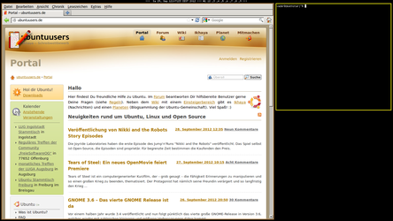

herbstluftwm
Dieser Artikel wurde für die folgenden Ubuntu-Versionen getestet:
Ubuntu 16.04 Xenial Xerus
Ubuntu 14.04 Trusty Tahr
Artikel für fortgeschrittene Anwender
Dieser Artikel erfordert mehr Erfahrung im Umgang mit Linux und ist daher nur für fortgeschrittene Benutzer gedacht.
Zum Verständnis dieses Artikels sind folgende Seiten hilfreich:
herbstluftwm  ist ein Tiling-Fenstermanager, der xmonad ähnelt. Er wird gerne zusammen mit dem Panel dzen verwendet, das ab Ubuntu 12.10 automatisch mitinstalliert wird.
ist ein Tiling-Fenstermanager, der xmonad ähnelt. Er wird gerne zusammen mit dem Panel dzen verwendet, das ab Ubuntu 12.10 automatisch mitinstalliert wird.
Er wird vollständig mit der Tastatur bedient, außer auf Tags (vergleichbar mit virtuellen Arbeitsflächen), die in den Floating-Modus geschaltet sind, wobei herbstluftwm wie ein "normaler" Fenstermanager arbeitet. Das Tiling erfolgt gemischt automatisch (nach 3 möglichen Layout-Algorithmen) und nach Vorgaben des Benutzers.
|  |
| herbstluftwm mit der Standardkonfiguration des Artikelautors. Gezeigt wird manuelles Tiling mit Firefox, xterm und einem leeren Frame. |
Installation¶
herbstluftwm kann ab Ubuntu 12.04 bequem und einfach über die Paketverwaltung installiert [1] werden:
herbstluftwm (universe)
 mit apturl
mit apturl
Paketliste zum Kopieren:
sudo apt-get install herbstluftwm
sudo aptitude install herbstluftwm
Als erste und einzige Arbeitsumgebung¶
Soll herbstluftwm die erste und einzige Arbeitsumgebung bei der Neuinstallation eines Systems werden, so beginnt man mit einer Installation mittels Minimalinstallation oder Netzwerkinstallation, und installiert herbstluftwm per Paketverwaltung.
Neben einer bestehenden Arbeitsumgebung¶
In einer ganz normalen grafischen Sitzung installiert man herbstluftwm per Paketverwaltung. Nach einer Abmeldung sollte eine neue grafische Sitzung in der Sitzungsauswahl zur Verfügung stehen, die die Benutzung von herbstluftwm ermöglicht.
Allerdings muss vor der ersten Benutzung der Fenstermanager erst noch brauchbar konfiguriert werden!
Tiling-Algorithmen¶
herbstluftwm verwaltet seine Frames in einem Binärbaum. Beim Start des Fenstermanagers existiert (pro Tag) genau ein Frame, der das komplette Anzeigegerät ausfüllt.
Frames erfüllen jeweils genau eine der folgenden zwei Bedingungen:
Frame enthält Fenster, auf die einer der folgenden Layoutalgorithmen angewendet wird:
Tiling-Algorithmen Index Layout Beschreibung 0 vertikal Fenster werden über-/untereinander angeordnet 1 horizontal Fenster werden nebeneinander angeordnet 2 max Alle Fenster in diesem Frame werden maximiert dargestellt 3 Gitter Fenster werden in einem möglichst quadratischen Gitter dargestellt Frame ist in genau zwei Subframes aufgeteilt (Binärbaum!)
Der Frame ist in einem variablen Verhältnis entweder horizontal oder vertikal in zwei weitere Frames aufgeteilt, für welche ebenfalls die genannten Bedingungen gelten. Wird ein bereits Fenster enthaltender Frame geteilt, so werden dessen Fenster vom ersten Subframe übernommen.
Konfiguration und Bedienung¶
herbstluftwm wird über das Werkzeug herbstclient konfiguriert, das sowohl im Shellscript ~/.config/herbstluftwm/autostart beim Start der Sitzung aufgerufen wird, als auch zur Laufzeit benutzt werden kann, um die Konfiguration zu ändern.
herbstclient¶
herbstclient ist ein Kommandozeilenwerkzeug, das dazu dient, einer laufenden Instanz von herbstluftwm Kommandos (mit deren eventuellen Argumenten) zu übergeben.
herbstclient [OPTIONEN] KOMMANDO [ARGUMENTE …]
herbstclient [OPTIONEN] [--wait|--idle] [FILTER …]
Es kann mit folgenden Optionen aufgerufen werden:
| herbstclient | |
| Option | Wirkung |
-n--no-newline | Erzeugt keinen Zeilenumbruch, wenn die Ausgabe nicht mit einem Zeilenumbruch endet. |
-i--idle | Wartet auf hooks, statt Befehle auszuführen. |
-w--wait | Wie --idle, aber beendet nach --count hooks. |
-c--count ANZAHL | Lasse --wait beenden, nachdem ANZAHL hooks empfangen und ausgegeben wurden. Der Standardwert von ANZAHL ist 1. |
-q--quiet | Schreibt keine Fehlermeldungen, wenn herbstclient sich nicht mit der laufenden Instanz von herbstluftwm verbinden kann. |
-h--help | Schreibt Informationen über die Benutzung von herbstclient. |
Ein Exitstatus von 0 vermeldet hierbei die erfolgreiche Ausführung. Wird hingegen EXIT_FAILURE zurückgegeben, konnte der Fenstermanager nicht starten oder wmexec hat versagt.
herbstluftwm¶
herbstluftwm kann mit folgenden Optionen gestartet werden:
| herbstluftwm | |
| Option | Wirkung |
-c PFAD--autostart PFAD | Benutze PFAD als Autostart-Datei anstelle des Standardautostarts. |
-v--version | Gibt Versionshinweise aus und beendet sich. |
-l--locked | Setze den Wert von monitors_locked einmalig auf 1. |
--verbose | Schreibt Informationen auf stderr. |
Einstellungen¶
Siehe Unterartikel Einstellungen
Autostart¶
Die Datei ~/.config/herbstluftwm/autostart ist die einzige Konfigurationsdatei von herbstluftwm. Da sie im Homeverzeichnis liegt, ist sie spezifisch für den jeweiligen Benutzer.
Bei dieser Datei handelt es sich um ein Shellscript. Sie wird beim Start des Fenstermanagers, also dem Sitzungsbeginn, ausgeführt, und enthält herbstclient-Befehle, über die herbstluftwm für die Sitzung konfiguriert wird. Da es sich um ein Shellscript handelt, können aber auch Anwendungen aufgerufen werden, was der gängige Weg ist, um unter herbstluftwm ein Panel zu starten.
Die von Ubuntu und Debian ausgelieferte Autostartdatei ermöglicht noch keine wirkliche Benutzung des Fenstermanagers. Es muss dafür erst angepasst werden. Das Gleiche gilt für das Betriebsskript des Panels.
Eine brauchbare Autostartdatei  steht zum Herunterladen zur Verfügung. Für das Panel dzen gibt es ebenfalls eine sinnvolle Erst-Konfiguration.
steht zum Herunterladen zur Verfügung. Für das Panel dzen gibt es ebenfalls eine sinnvolle Erst-Konfiguration.
Lege den Konfigurationsordner an:
mkdir ~/.config/herbstluftwm/
Speichere die Inhalte der Autostart-Datei und der panel.sh in entsprechend benannten Dateien im angesprochenen Konfigurationsordner.
Mache beide ausführbar:
chmod u+x ~/.config/herbstluftwm/autostart chmod u+x ~/.config/herbstluftwm/panel.sh
Danach sollte eine Anmeldung mit herbstluftwm als Fenstermanager funktionieren.
Tastatur- und Mauskürzel¶
Als Modifier ist in der im Artikel verlinkten Konfiguration "Super" (die "Windows-Taste") eingetragen.
| Tastatur- und Mauskürzel | |
| Kürzel | Wirkung |
| Super + Strg + Q | beendet die Sitzung |
| Super + ⇧ + R | lädt die Konfiguration von herbstluftwm neu (herbstclient reload) |
| Super + | Veränderung des Layouts |
| Alt + F4 | schließt das fokussierte Fenster |
| Super + T | öffnet ein xterm-Fenster (Terminal) |
| Super + W | öffnet den Webbrowser (Firefox) |
| Super + R | Entfernt einen Subframe. Dessen Fenster werden vom Nachbarframe übernommen. |
| Super + U | Teilt den fokussierten Frame vertikal in zwei Subframes. |
| Super + O | Teilt den fokussierten Frame horizontal in zwei Subframes. |
| Super + S | Schaltet zwischen Floating- und Tilingmodus um. |
| Super + F | Schaltet zwischen Vollbild- und Fenstermodus des fokussierten Fensters um. |
| Super + P | Schaltet den pseudotile-Status des fokussierten Fensters ein/aus. |
| Super + 1 bis Super + 9 | Wechsel zum Tag 1,2,3, bis 9 |
| Super + ⇧ + 1 bis Super + ⇧ + 9 | Verschiebt das fokussierte Fenster auf den Tag 1,2,3 bis 9 ohne diesem zu folgen. |
| Super + Strg + H | vergrößere den fokussierten Subframe nach links |
| Super + Strg + J | vergrößere den fokussierten Subframe nach unten |
| Super + Strg + K | vergrößere den fokussierten Subframe nach oben |
| Super + Strg + L | vergrößere den fokussierten Subframe nach rechts |
Super +  | verschieben (nur im Floatingmodus) |
Super +  | Fenster skalieren (nur im Floatingmodus) |
Super +  | Fenster aus der Mitte aufziehen (nur im Floatingmodus) |
| Super + ⌫ | wechsle den Fokus durch die Monitore, falls mehrere vorhanden sind |
| Super + Tab ⇆ | wechsle den Fokus vorwärts durch die Fenster eines Tags |
| Super + ⇧ + Tab ⇆ | wechsle den Fokus rückwärts durch die Fenster eines Tags |
| Super + C | wechsle den Fokus vorwärts durch die Fenster eines Frames |
| Super + H | verschiebe den Fokus nach links |
| Super + J | verschiebe den Fokus nach unten |
| Super + K | verschiebe den Fokus nach rechts |
| Super + L | verschiebe den Fokus nach rechts |
| Super + ⇧ + H | verschiebe das fokussierte Fenster nach links |
| Super + ⇧ + J | verschiebe das fokussierte Fenster nach unten |
| Super + ⇧ + K | verschiebe das fokussierte Fenster nach oben |
| Super + ⇧ + L | verschiebe das fokussierte Fenster nach rechts |
Das Panel¶
Installiert man herbstluftwm unter Ubuntu, so wird ab 12.10 standardmäßig das Panel dzen mitinstalliert. Mit der primitiven, im Artikel verlinkten Konfiguration zeigt es Uhrzeit, Datum, sowie die jeweils aktuelle Ausgabe von herbstclient tag_status, so dass man sich auf den mehreren konfigurierten Tags von herbstluftwm zurechtfindet.
Mehrere Monitore¶
Beim Start des Fenstermanagers, also beim Beginn der Sitzung, werden vorhandene Anzeigen automatisch erkannt und eingerichtet. Änderungen an den vorhandenen Anzeigegeräten und deren Layout, wie das Hinzufügen einer Anzeige oder das Rearrangieren eines Multi-Monitor-Setups zur Laufzeit werden nicht automatisch erkannt, und müssen herbstluftwm per herbstclient mitgeteilt werden.
Links¶
- Erstellt mit Inyoka
-
 2004 – 2017 ubuntuusers.de • Einige Rechte vorbehalten
2004 – 2017 ubuntuusers.de • Einige Rechte vorbehalten
Lizenz • Kontakt • Datenschutz • Impressum • Serverstatus -
Serverhousing gespendet von